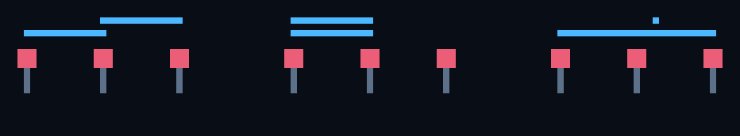
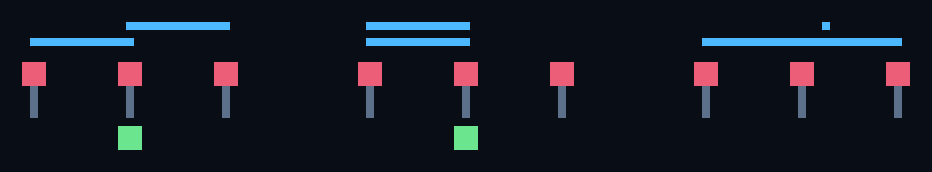
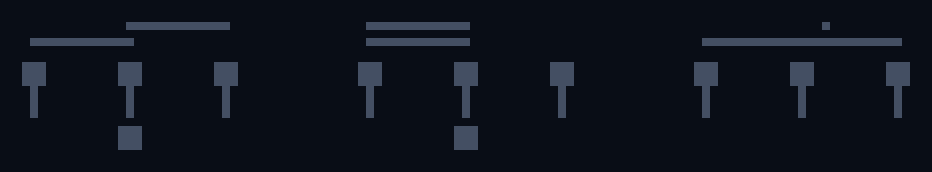

成功
VP012 — 同値でも異なる同一性

入力

期待結果

実出力
差分

観測: 見える値が同じ130・130でも、別々の共有出来事が二つ存在する場合だけ局所結果が形成されました。相手が同じか別かは結果を左右しません。
本線へ返す候補圧力: 新しい視覚的圧力は露出しませんでした。
実行情報: {"one_shared_plus_private_231": false, "same_remote_231": true, "source_ia": "IA1175-IA1176", "split_remote_231": true}